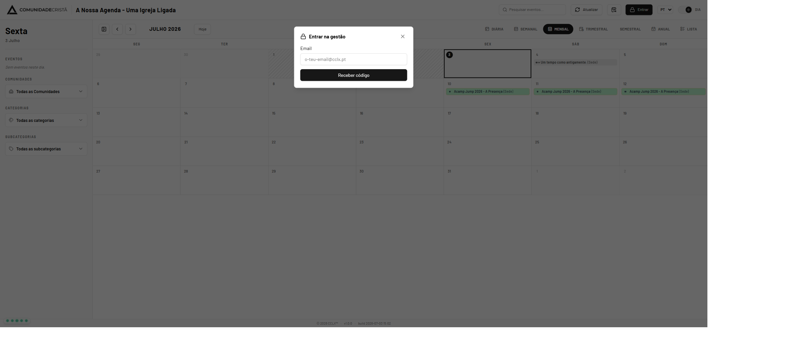
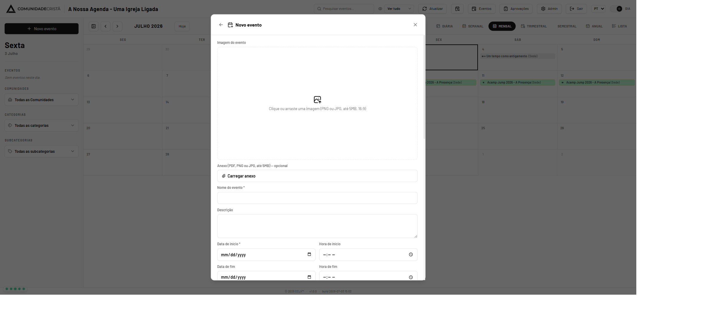
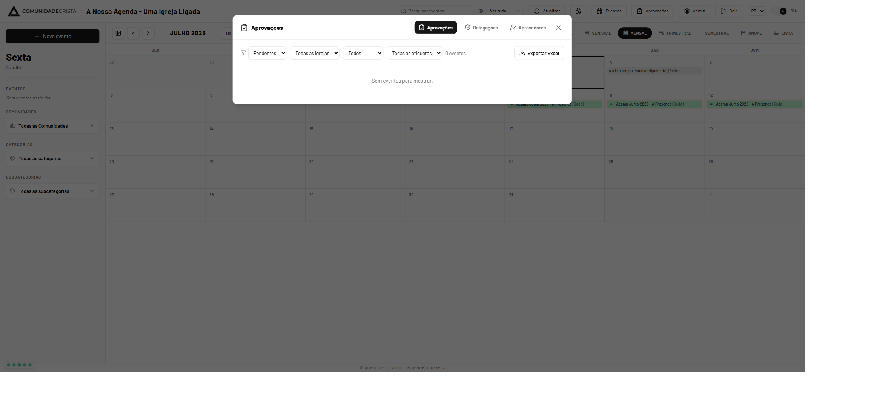
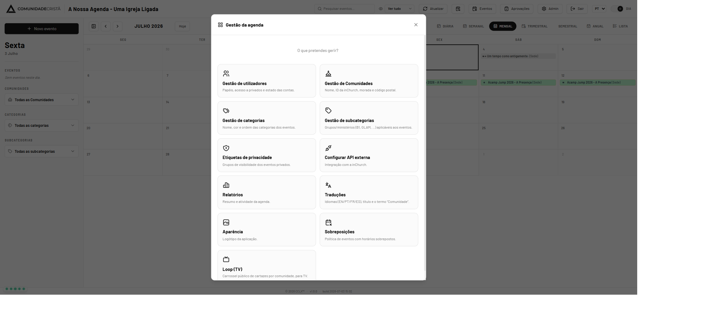
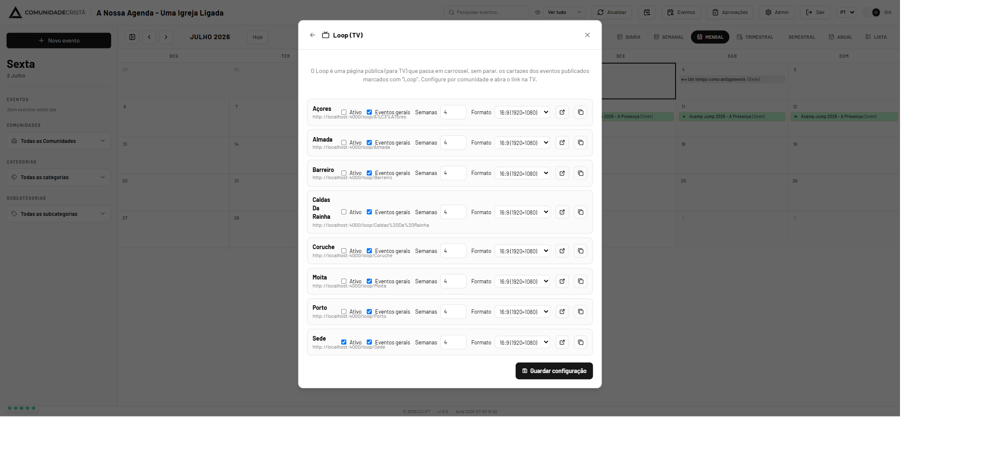

1. Papéis e o que cada um pode fazer
O acesso à gestão depende do seu papel. À exceção do Administrador, todos os gestores estão limitados às comunidades que lhes forem atribuídas.
| Papel | Permissões |
|---|---|
| Administrador | Acesso total: utilizadores, comunidades, categorias, integração, relatórios e todo o ciclo dos eventos, em todas as comunidades. |
| Aprovador | Cria, edita, submete e aprova/rejeita eventos das suas comunidades. |
| Editor | Cria, edita e submete eventos das suas comunidades. |
2. Entrar na gestão
O acesso é feito por código enviado por email (sem palavra-passe).

- Clique em Entrar, no topo direito.
- Escreva o seu email e clique em Receber código.
- Introduza o código de 6 dígitos que recebeu por email e confirme.
3. Criar e editar um evento
Clique em Novo evento (barra lateral) — ou em Editar no detalhe de um evento existente — para abrir o formulário.

Campos principais
| Campo | Notas |
|---|---|
| Imagem do evento | PNG ou JPG, até 5 MB, proporção 16:9. Clique ou arraste. |
| Nome do evento * | Obrigatório. |
| Data/hora de início * e fim | A data de fim tem de ser igual ou posterior à de início. Há opção de “Dia inteiro”. |
| Comunidade, Categoria, Subcategoria | A comunidade é limitada às suas igrejas. A subcategoria pode ser obrigatória conforme a categoria. |
| Local e Mapa | Pesquise a morada no mapa para fixar a localização. |
| Responsável e Inscrições | Nome, telefone, email e ligação de inscrição. |
| Marcadores | Destaque, Loop (TV) e Evento geral. |
| Privado + Etiqueta | Se marcar privado, escolha uma etiqueta de privacidade (obrigatória). |
| Recorrência | Ao criar, pode gerar uma série (diária/semanal/mensal). |
4. Submeter e o fluxo de aprovação
Depois de criar, o evento segue um ciclo de estados:
Rascunho → Pendente → Publicado · Pendente → Rejeitado
- Guarde como Rascunho ou submeta para passar a Pendente.
- Só os eventos Publicados aparecem na agenda pública.
- Ao submeter, os aprovadores com acesso são notificados por email, podendo aprovar/rejeitar diretamente a partir do email.
5. Aprovar e rejeitar
Abra Aprovações no topo. Filtre por estado (pendentes por omissão), comunidade, categoria ou etiqueta.

- Aprovar publica o evento; Rejeitar exige um motivo e devolve-o ao editor.
- Aprovar tudo aprova todos os pendentes visíveis com os filtros atuais.
- Exportar Excel gera uma folha com os eventos listados.
6. Administração
O botão Admin abre o menu “Gestão da agenda”, com todas as áreas de configuração.

| Área | O que gere |
|---|---|
| Gestão de utilizadores | Papéis, acessos por comunidade, etiquetas e estado das contas (inclui importação por CSV). Só administrador. |
| Gestão de comunidades | Nome, ID inChurch, morada e código postal. |
| Categorias / Subcategorias | Nome, cor e ordem; grupos/ministérios aplicáveis aos eventos. |
| Etiquetas de privacidade | Grupos de visibilidade dos eventos privados. |
| Traduções / Aparência | Idiomas e textos; logótipo da aplicação. |
| Sobreposições | Política para eventos com horários sobrepostos (avisar/bloquear). |
| Configurar API externa | Integração e sincronização com a inChurch. |
7. Configurar o Loop (TV)
Em Admin → Loop (TV) configura o carrossel de cada comunidade.

- Ative o Loop na comunidade pretendida.
- Defina se inclui Eventos gerais e o número de Semanas a mostrar.
- Escolha o Formato do ecrã da TV: 16:9 (1920×1080) ou 32:9 (3840×1080).
- Use o ícone para abrir o Loop ou copiar o link e guarde a configuração.
8. Relatórios
Em Admin → Relatórios consulta resumos da agenda: número de eventos por
estado, comunidade, categoria, subcategoria e privacidade, além dos próximos
eventos e da atividade recente. As datas são apresentadas no formato
dd/mm/aaaa.
9. Boas práticas
- Use imagens em 16:9 para um aspeto consistente nos cartões e no Loop.
- Preencha local, contacto e inscrições — ajudam quem consulta a agenda.
- Marque como privados apenas os eventos que devem ter visibilidade restrita, e atribua-lhes a etiqueta certa.
- Ao editar um evento já publicado, a data e a hora ficam bloqueadas — para alterar horários, contacte um administrador.
Agenda CCLX — Manual do Utilizador · Versão 1.0.0 · © 2026 Comunidade Cristã de Lisboa (CCLX™).